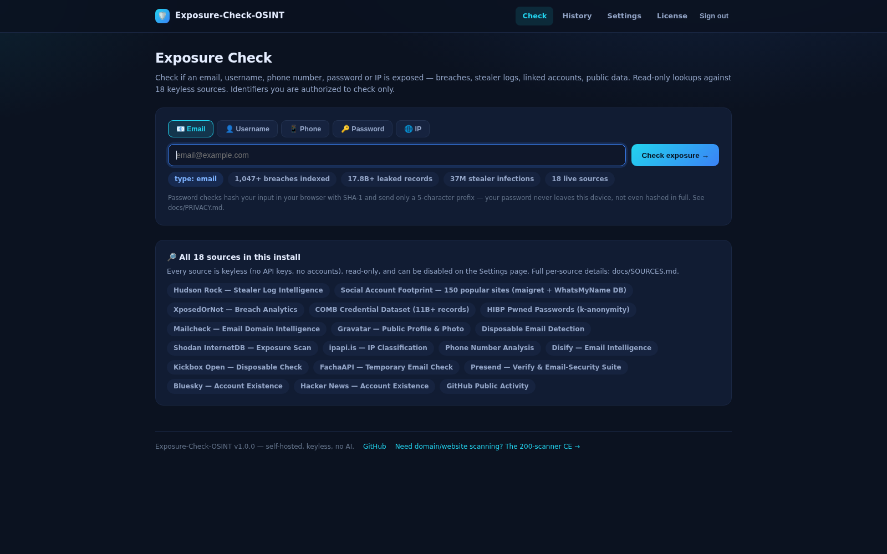
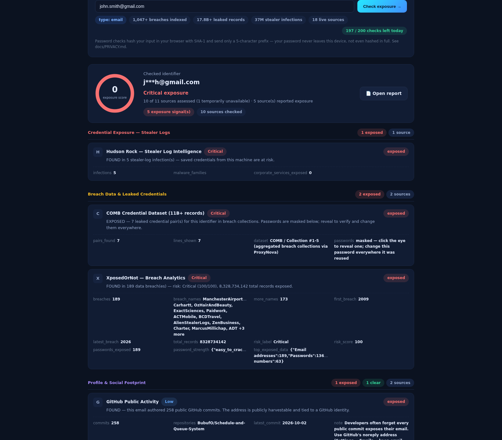
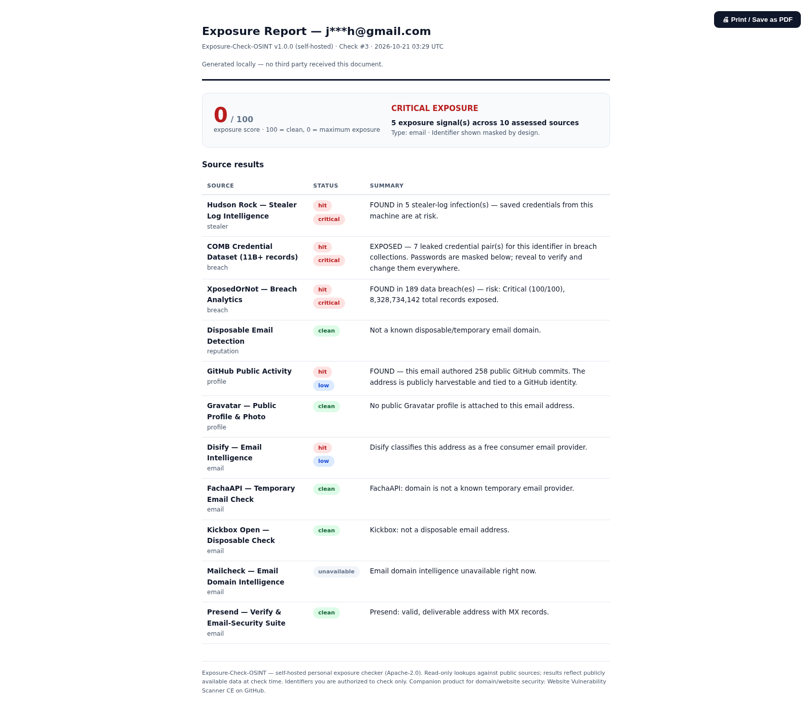

Is your email, username, phone or password already leaked?
A self-hosted exposure checker that answers with evidence from 22 keyless sources —
no API keys, no AI, no data leaving your machine.
Every screenshot below is captured from a real running install — live sources, live verdicts, real exposure.



Personal identifiers, not domain scanning — that's the scanner CE's job. This tool answers one question: what do attackers already know about you?
Breach collections, stealer-log infections, disposable flags, public-code associations
Which of 150 platforms carry this name — logo grid, Bluesky, Hacker News, GitHub
Validity, country, line type, COMB leak association
HIBP Pwned Passwords with k-anonymity — only a 5-char hash prefix ever leaves your browser
Open ports (Shodan InternetDB), VPN / proxy / hosting classification
No API keys to buy, no accounts to create, no rate-limit roulette. If a source is down it says so — it never fakes a "clear".
Evidence found — the source returns real matches, masked in the UI and stripped of credential material before storage.
The source answered and found nothing. A real answer, not a guess.
The source is down or blocked. It never counts as "clear" — honesty over cosmetics.
Docker pulls a single container (Apache + PHP 8.3 + SQLite). Nothing else. Your data stays on your disk.
# 1. clone & launch — http://localhost:8090 git clone https://github.com/RanaKhan77/Exposure-Check-OSINT.git cd Exposure-Check-OSINT && docker compose -f docker/docker-compose.yml up -d # 2. sign in (password set on first boot) and check yourself # 3. that's it — no keys, no accounts, no telemetry
Identifiers stored as salted hashes + masked forms only. Password checks store nothing — matching happens in your browser.
Every verdict is a deterministic, reproducible HTTP lookup. No model, no bill, no hallucinated findings.
Exposure score 0–100 (100 = clean). Dead sources degrade honestly and never fake a pass.
Overview, install, privacy design, source attribution and FAQ — as PDFs on the releases page.
How a self-hosted, keyless exposure checker works, and what it does with your data.
They complement each other. HIBP is a hosted service; Exposure-Check is a tool you run yourself — adding infostealer-log lookups, a 150-platform username grid, phone-number checks and IP intelligence, with no accounts and no data leaving your machine.
No. The whole stack runs on your hardware with Docker. Lookups are read-only against public sources, identifiers are stored as salted hashes with masked display, and password matching happens browser-side.
Five checks: email addresses, usernames, phone numbers, passwords (k-anonymity — the password itself never leaves your browser) and IP addresses — across 22 keyless sources including breach databases, infostealer logs and COMB 11B+ credentials.
All 22 sources work without API keys, accounts or paid tiers — public endpoints, open protocols and donated datasets. Clone, launch, check. Nothing to configure and nothing to buy.
The tool performs only read-only lookups against public sources. Use it for identifiers you are authorized to check — your own, or with permission. It is an awareness tool, not a targeting tool.
Every verdict is a deterministic HTTP lookup you can reproduce. No model bills, no hallucinated exposures, no scoring theater — dead sources degrade honestly instead of faking a clean pass.